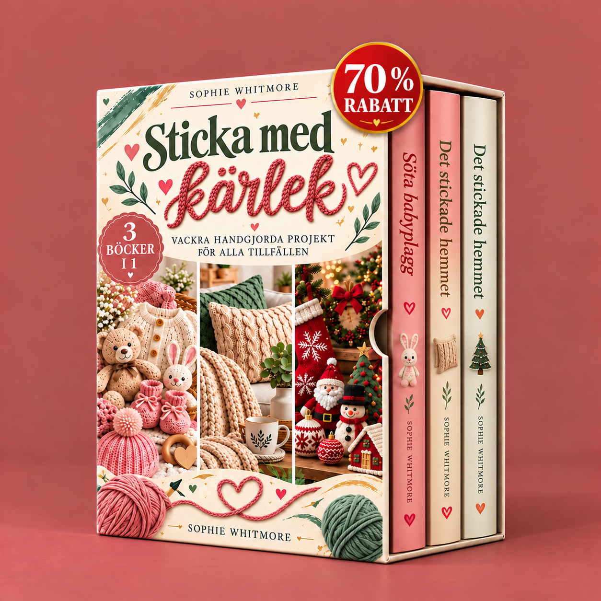

Upptäck stickprojekt för de minsta, hemmet och julen. Välj en bok och följ mönstret i din egen takt.
Dina stickböcker laddas…
Aktivera JavaScript för medlemsområdet eller öppna böckerna direkt via länkarna nedan.
Skicka ett mejl